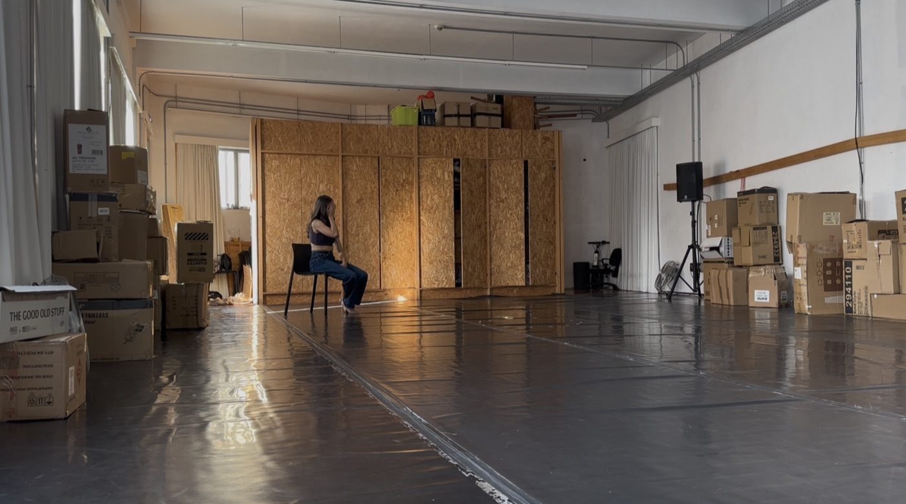

Bodies in motionIn hand
Already in the room.
One rehearsal still from each solo — already captured. The full set of four per dancer lives on their own chapter.


An interactive web documentary on inclusive dance — the Diogo & Sibela show by choreographer Tânia Carvalho, told through the dancers and the objects left on stage: cardboard boxes, and a wooden chair.
Straight from the homepage, a visitor can drop into either dancer's world before ever touching the linear spine.
The same nine-section structure from the sitemap, but each row now carries the real content type that will appear there, not a description of it.
One rehearsal still from each solo — already captured. The full set of four per dancer lives on their own chapter.

Captions, transcripts, and audio description run through the whole site — the site-wide trailer that demonstrates this is still to make.
Where the audience's own boxes accumulate into a collective composition after the show.
Closing the homepage the way the piece closes on stage — with the audience's own trace, and their own words about it.
“The installation supports multiple participants simultaneously. Each person influences the system independently, allowing collective improvisation to emerge.”
Bernardo Nunes · thesis draft, on audience participationIn hand